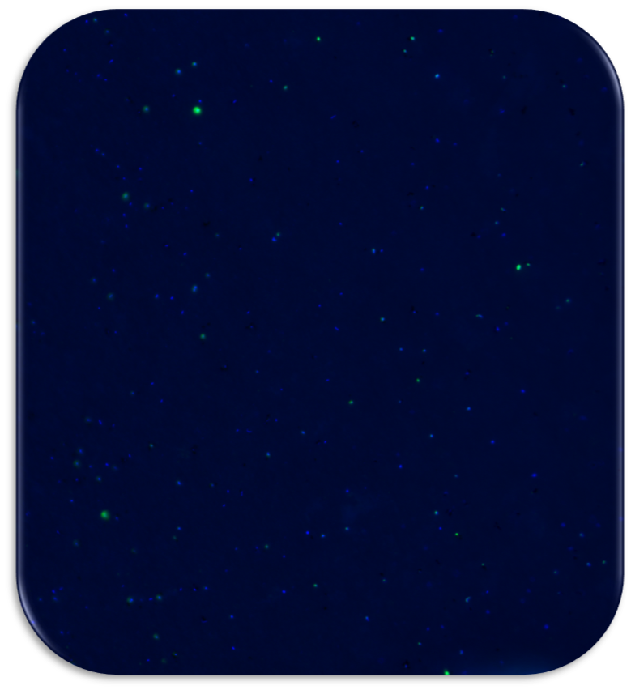

More than 70% of the Earth’s surface is covered with water!
Roughly 50% of the oxygen that we consume is produced by phytoplankton (small algae & cyanobacteria)!
Thus, processes mediated in aquatic ecosystems are of crucial global importance!
1 mL of seawater contains around 1 billion microbial cells!
Microorganisms are the key players in biogeochemical cycles for example the carbon cycle with major implications for regulating the climate!
The total estimated microbial surface area is the largest on this planet!

This is an epifluorescence microscopy image of a few mL of seawater. It shows the fluorescence of microbial DNA after staining it with a specific dye. In blue colour you can see mainly Archaea and in green mainly Bacteria after hybridization with a specific FISH probe (Fluorescence In Situ Hybridization).
© 2018 Benjamin Pontiller | Last updated on .